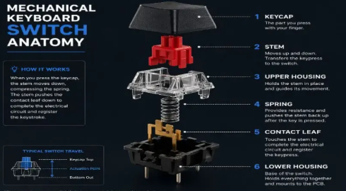

Helpful Resources
The links below are a good starting point. Each one opens an outside website.

-
Wikipedia: Membrane keyboard
What it is: A Wikipedia article on membrane keyboards, where the different designs are explained and why they are different from mechanical keyboards.
Why it's useful: It explains how membrane keyboards work, which helps you see the difference between them and mechanical keyboards.
-
RTINGS: Best Keyboard Switches
What it is: Lab-tested reviews that rank keyboard switches by their type.
Why it's useful: It lets you compare switch options using measured data instead of just opinions.
-
Keychron Blog
What it is: The official blog of a keyboard manufacturer, with guides on switches, keycap materials, and building a keyboard.
Why it's useful: It has beginner friendly guides that walk you through choosing or building your first mechanical keyboard.
-
Deskthority Wiki: Cherry MX
What it is: A community-run wiki entry on Cherry MX, the most popular line of switches in mechanical keyboards.
Why it's useful: It explains the color coded switch types like (red, brown, blue, and more), so you can understand the names and differences.
-
KeebTalk: The Ultimate Beginner's Guide to Mechanical Keyboards
What it is: A community forum covering switches, layouts and sizes, customization, and the parts of customizing a build.
Why it's useful: It covers the whole hobby in one place, so it works as a map from buying a first keyboard to building your own personalized keyboard.